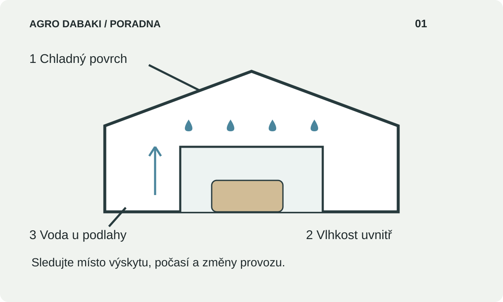
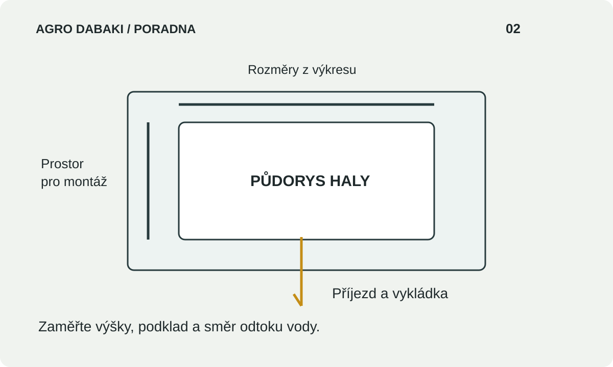
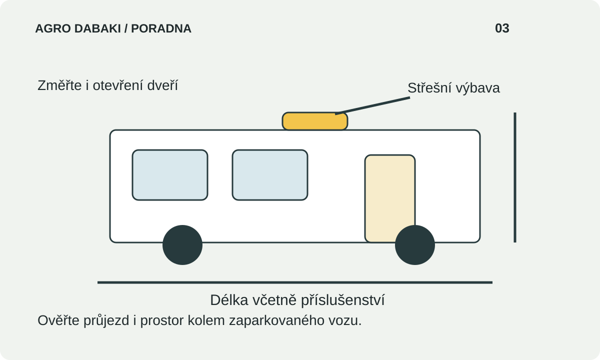
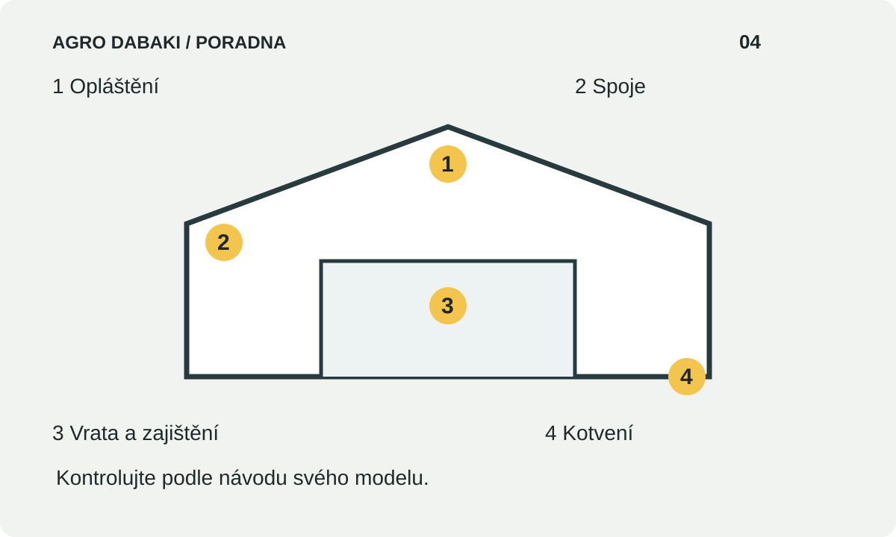
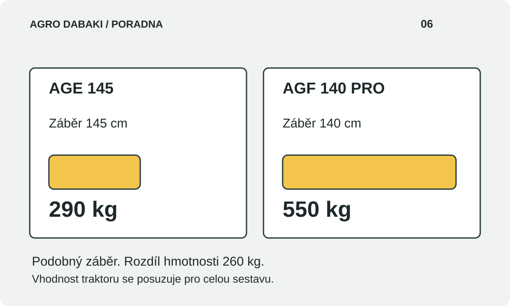
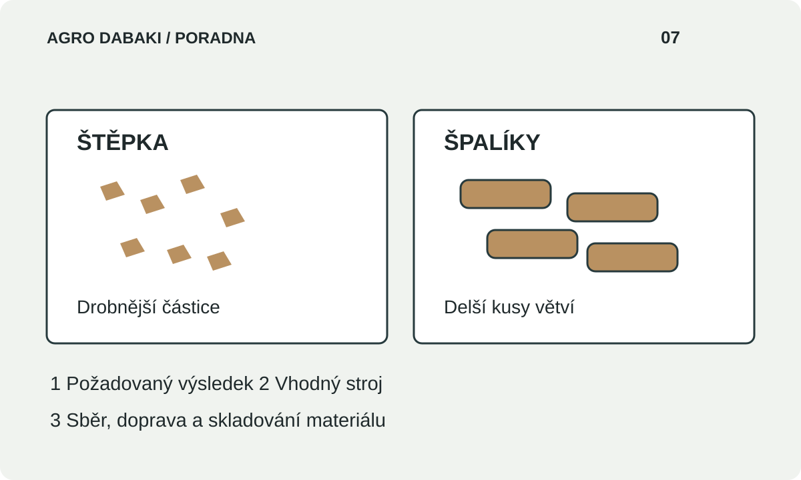
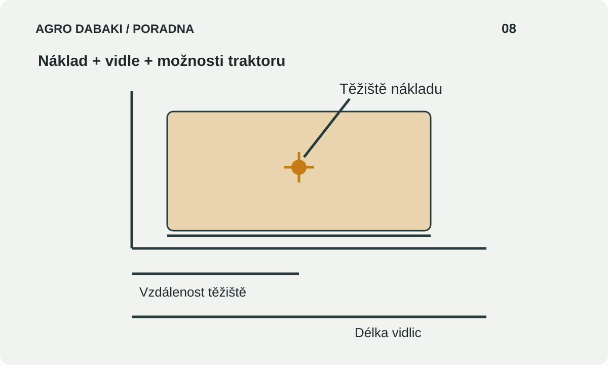

Dalších osm odpovědí pro vaše zákazníky.
Kompletní texty, vlastní schémata a SEO podklady. Připraveno 18. 11. 2026. Všech osm článků zveřejněno 18. 11. 2026 v Poradně.
Článek 01Proč v plachtové hale kape voda, i když neprší? Kondenzace a možnosti řešení
Kape v plachtové hale voda? Zjistěte, jak odlišit kondenzaci od zatékání a co prověřit u podlahy, uložených věcí a větrání.

Článek 02Co připravit pod plachtovou halu? Podklad, odvodnění a kotvení před objednávkou
Připravujete místo pro plachtovou halu? Projděte zaměření, odvodnění, kotvení, příjezd a podklady, které si vyžádat před úpravou plochy.

Článek 03Plachtová garáž pro karavan: co ověřit kromě délky a výšky
Vyberte garáž pro karavan podle skutečného vozu, rozměrů vrat a místa kolem něj. Srovnání dvou výšek garáže s půdorysem 4,3 × 9,2 m.

Článek 04Plachtová hala před zimou: co zkontrolovat na plachtě, vratech a konstrukci
Připravte plachtovou halu na zimní provoz. Kontrolní seznam opláštění, kotev, spojů a vrat a údaje, které dohledat v návodu své haly.

Článek 05Kolik stojí plachtová hala celkem? Co připočítat k ceně konstrukce
Sestavte rozpočet plachtové haly včetně přípravy plochy, kotvení, vykládky a montáže. Přehled položek pro porovnání dvou nabídek.
Článek 06Příkopový mulčovač za traktor: stačí výkon, nebo rozhoduje i hmotnost a dosah?
Porovnejte AGE a AGF PRO podle hmotnosti, záběru a minimálního výkonu. Zjistěte, co ověřit u traktoru, hydrauliky, závěsu a bočního dosahu.

Článek 07Štěpkovač, nebo špalíkovač? Vyberte podle toho, co chcete z větví získat
Porovnejte štěpkovač BX 92 RS a špalíkovače TR 110 a TRS 110. Rozhodujte podle výsledného materiálu, možností traktoru a manipulace.

Článek 08Paletizační vidle za traktor: jak vybrat nosnost, uchycení a délku vidlic
Jak vybrat paletizační vidle? Porovnejte délku vidlic a hmotnost D 300, D 700 a D 1200 a ověřte náklad, těžiště i možnosti traktoru.
